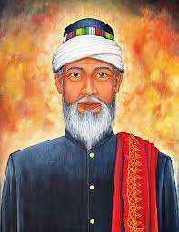
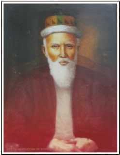
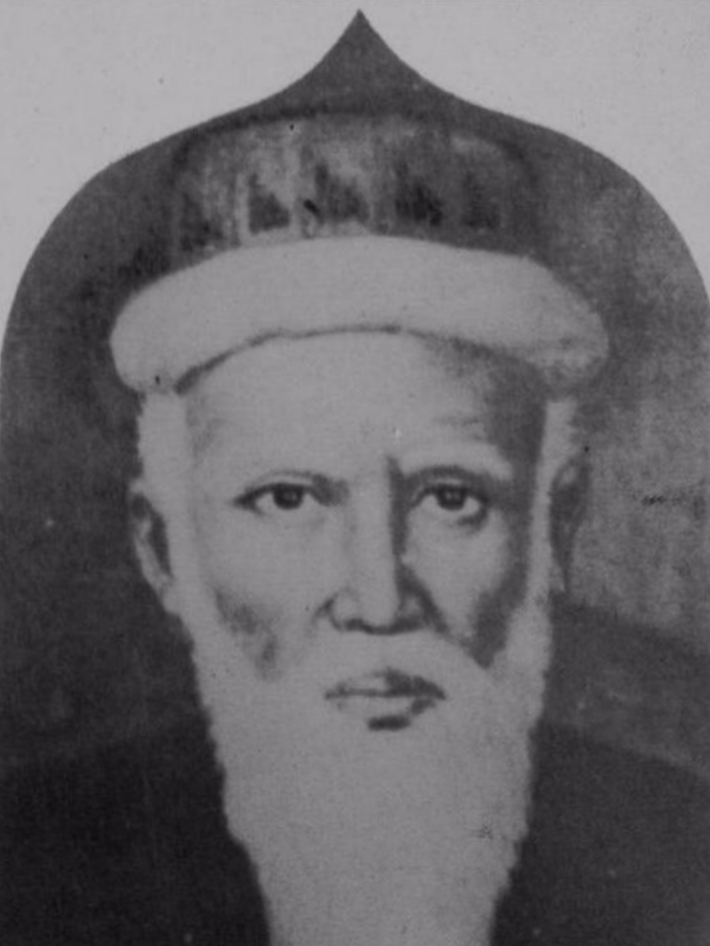
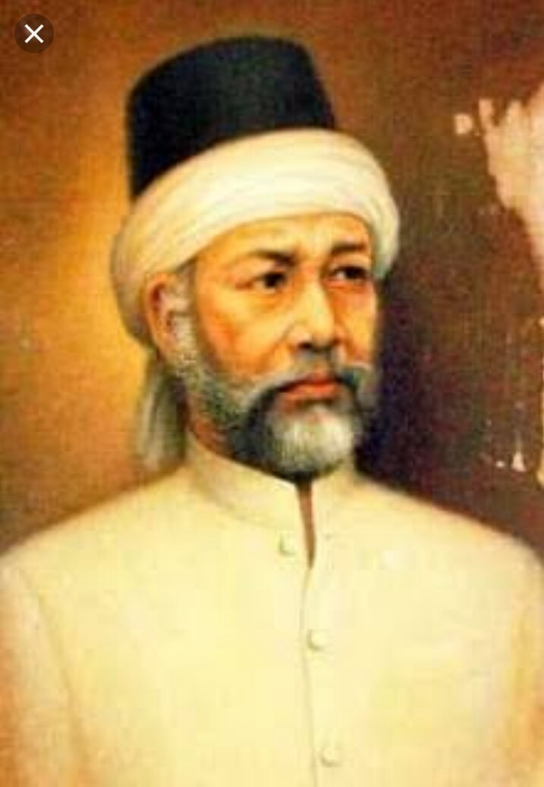
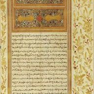
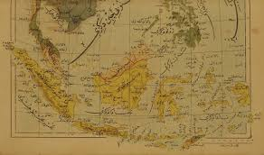
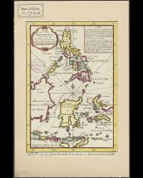
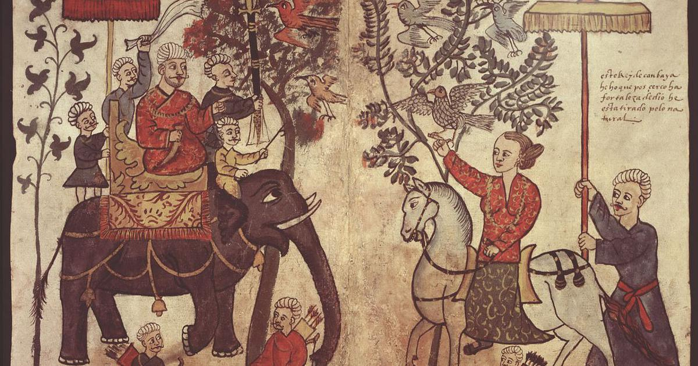

Presentasi Sejarah
Kesultanan Aceh
Darussalam
Kejayaan, Kekuasaan, dan Warisan Peradaban Islam di Nusantara
"Aceh adalah serambi Mekah — pintu gerbang Islam di ujung barat Nusantara."
Presentasi Sejarah
Kejayaan, Kekuasaan, dan Warisan Peradaban Islam di Nusantara
"Aceh adalah serambi Mekah — pintu gerbang Islam di ujung barat Nusantara."
Pengantar
Kesultanan Aceh Darussalam (1496–1903) adalah kerajaan Islam besar di utara Sumatera, berpusat di Banda Aceh. Didirikan oleh Sultan Ali Mughayat Syah, kerajaan ini mencapai puncak kejayaan di bawah Sultan Iskandar Muda (abad ke-17), menjadi pusat perdagangan lada dan penyebaran Islam (Serambi Mekkah), serta gigih menentang kolonialisme Portugis.
Bendera
Apa makna simbol-simbol pada bendera ini?
Bendera
Kronologi

Geografi
Kesultanan Aceh terletak di ujung barat Pulau Sumatra, menguasai jalur perdagangan Selat Malaka — salah satu jalur maritim tersibuk di dunia. Posisi ini menjadikan Aceh sebagai pusat perdagangan rempah-rempah, lada, dan emas yang menghubungkan Asia Timur, Asia Selatan, dan Timur Tengah.
Letak Strategis
Aceh merupakan titik masuk utama bagi para pedagang internasional yang datang dari Timur Tengah dan India menuju kepulauan Nusantara. Posisi geografisnya di ujung utara Pulau Sumatra menjadikannya perhentian pertama yang sangat krusial dalam jalur pelayaran dunia.
Setiap kapal yang berlayar dari Samudra Hindia menuju Asia Tenggara harus melewati Aceh terlebih dahulu, menjadikannya gerbang utama peradaban Islam dan perdagangan internasional di kawasan ini.
Pusat Maritim Internasional
Pelabuhan Aceh dikenal sangat sibuk dan dikunjungi oleh berbagai kapal dari mancanegara setiap harinya, termasuk dari:
Keramaian ini menjadikan Aceh sebagai pusat pertukaran budaya, bahasa, dan pengetahuan dari berbagai peradaban dunia.
Kekuatan Politik dan Teritorial
Pada masa keemasannya, pengaruh dan kekuasaan Aceh tidak hanya terbatas di wilayah ujung Sumatra, tetapi meluas hingga mencakup:
Ekspansi teritorial ini menjadikan Aceh sebagai kekuatan regional yang disegani, mampu mengimbangi pengaruh Portugis dan Belanda di Selat Malaka.
Monopoli Komoditas Global
Salah satu kekuatan ekonomi terbesar Aceh adalah penguasaan komoditas. Pada abad ke-17, Aceh berhasil menguasai sekitar 50% perdagangan lada hitam dunia, menjadikannya pemain kunci dalam pasar rempah-rempah global yang sangat dicari oleh bangsa Eropa dan Asia.
Lada hitam pada masa itu setara dengan emas — sangat berharga dan menjadi sumber kekayaan utama kerajaan. Monopoli ini memberikan Aceh kekuatan ekonomi dan politik yang luar biasa besar di kawasan Asia Tenggara.
Kekayaan dari perdagangan lada inilah yang membiayai pembangunan armada laut, istana megah, dan masjid-masjid besar di masa Sultan Iskandar Muda.

Ekonomi
Selat Malaka adalah jalur perdagangan paling vital yang menghubungkan Samudra Hindia dan Laut Cina Selatan. Setiap kapal dagang dari India, Arab, Persia, dan Tiongkok harus melewati selat ini untuk mencapai kepulauan rempah-rempah di Maluku.
Aceh memanfaatkan posisi strategis ini dengan mengendalikan pelabuhan-pelabuhan utama dan memungut bea cukai dari kapal-kapal yang melintas. Perdagangan lada hitam, emas, dan sutra menjadikan Aceh salah satu kerajaan terkaya di Asia Tenggara pada abad ke-16 dan ke-17.

Tokoh Utama
Memerintah 1607–1636 · Masa Keemasan Aceh
Sultan Iskandar Muda adalah penguasa terbesar dalam sejarah Kesultanan Aceh. Di bawah kepemimpinannya, Aceh mencapai puncak kejayaan sebagai kekuatan maritim dan pusat perdagangan internasional. Ia memperluas wilayah kekuasaan hingga ke Semenanjung Malaya dan pesisir timur Sumatra.
Dikenal sebagai pemimpin yang tegas dan visioner, ia membangun armada laut yang kuat, memperkuat ekonomi melalui perdagangan lada dan emas, serta menjadikan Aceh sebagai pusat keilmuan Islam di Nusantara. Masa pemerintahannya adalah era di mana Aceh disegani oleh kekuatan Eropa seperti Portugis dan Belanda.
"Di masa Iskandar Muda, Aceh adalah mercusuar Islam dan kekuatan yang ditakuti di Selat Malaka."

Tokoh Ulama
Abad ke-16 · Penyair Sufi Pertama Nusantara
Hamzah Fansuri adalah ulama dan penyair sufi pertama di Nusantara. Ia menulis syair-syair mistis Islam dalam bahasa Melayu, meletakkan dasar sastra Islam di Asia Tenggara. Karya-karyanya seperti Syair Perahu dan Asrar al-Arifin menjadi tonggak awal kesusastraan Melayu-Islam.
Berasal dari Barus (Fansur), Sumatra Utara, ia mengembangkan ajaran tasawuf wujudiyah yang kemudian menjadi perdebatan besar di kalangan ulama Aceh.
"Hamzah Fansuri membawa Islam bukan hanya sebagai hukum, tetapi sebagai puisi jiwa."

Tokoh Ulama
Wafat 1630 · Mufti & Penasihat Sultan
Syamsuddin as-Sumatrani adalah ulama tasawuf dan penasihat kepercayaan Sultan Iskandar Muda. Ia melanjutkan dan mengembangkan ajaran Hamzah Fansuri, memperkuat tradisi keilmuan Islam di istana Aceh.
Karya utamanya, Mir'at al-Mu'minin, membahas hakikat iman dan tasawuf. Ia menjadi figur sentral dalam kehidupan intelektual Aceh pada masa keemasan.
"Di bawah Syamsuddin, istana Aceh menjadi pusat ilmu dan spiritualitas Islam di Nusantara."

Tokoh Ulama
Aktif 1637–1644 · Mufti Kerajaan & Ensiklopedis
Nuruddin ar-Raniri adalah ulama besar asal Gujarat yang menjadi mufti kerajaan Aceh. Ia menulis Bustanus Salatin, ensiklopedia Islam Nusantara yang membahas sejarah, hukum, etika, dan ilmu pengetahuan — karya terlengkap pada zamannya.
Ia juga dikenal sebagai penjaga ortodoksi Islam, menentang ajaran wujudiyah Hamzah Fansuri yang dianggapnya menyimpang.
"Bustanus Salatin adalah warisan intelektual terbesar yang lahir dari tanah Aceh."

Tokoh Ulama
1615–1693 · Penerjemah Al-Qur'an & Penasihat Sultanah
Abdurrauf as-Singkili adalah ulama pertama yang menerjemahkan Al-Qur'an ke dalam bahasa Melayu secara lengkap, menghasilkan Tarjuman al-Mustafid — karya yang menjadi rujukan umat Islam Nusantara hingga berabad-abad kemudian.
Ia menjadi penasihat utama Sultanah Safiatuddin dan tokoh tasawuf terkemuka abad ke-17, menjembatani tradisi keilmuan Aceh dengan dunia Islam internasional.
"Terjemahan Al-Qur'an Abdurrauf membuka pintu Islam bagi jutaan jiwa yang tidak mengenal bahasa Arab."
Tebak Tokoh
"Selama aku masih hidup, kita masih berperang dengan Belanda. Aku tidak akan berhenti sampai tetes darahku yang terakhir."
✅ Benar! Cut Nyak Dhien. Bahkan setelah suaminya Teuku Umar gugur dan ia hampir buta di hutan, ia menolak menyerah. Ia akhirnya tertangkap hanya karena komandannya sendiri merasa kasihan dan menuntun Belanda ke kemahnya.
Tebak Tokoh
"Lebih baik melihat anak-anak kita mati dalam keadaan beriman daripada melihat mereka hidup sebagai budak kaum kafir."
✅ Benar! Teungku Chik di Tiro. Ini mencerminkan semangat Hikayat Prang Sabi. Bagi rakyat Aceh, ini bukan sekadar perang memperebutkan tanah — melainkan perjuangan spiritual di mana gugur dalam pertempuran dianggap sebagai kemenangan tertinggi.

Penjajahan
Pada tahun 1873, Belanda melancarkan serangan besar-besaran terhadap Aceh untuk menguasai wilayah terakhir yang belum tunduk di Nusantara. Perang Aceh menjadi konflik paling panjang dan paling mahal dalam sejarah kolonial Belanda, berlangsung hingga awal abad ke-20.
Keputusan Sejarah
Keputusan Sejarah
Perang Aceh
Perang Aceh bukan sekadar pertempuran dua angkatan bersenjata formal — ini adalah perang rakyat.
Perang Aceh
Akhir 1890-an, Belanda mengubah pendekatan di bawah Jenderal J.B. van Heutsz dan saran sarjana Islam Snouck Hurgronje — beralih ke misi "cari dan hancurkan" menggunakan Maréchaussée (infanteri ringan).

Hubungan Diplomatik
1615 · Surat Sultan Iskandar Muda kepada Raja James I
Pada tahun 1615, Sultan Iskandar Muda mengirimkan surat resmi kepada Raja James I dari Inggris — salah satu dokumen diplomatik paling bersejarah dari Nusantara. Surat ini menawarkan kerja sama perdagangan dan aliansi strategis melawan kekuatan Portugis yang mendominasi jalur rempah-rempah.
Hubungan ini membuka jalur dagang langsung antara Aceh dan Inggris melalui East India Company (EIC), menjadikan Aceh mitra dagang penting bagi kekuatan Eropa non-Portugis.
"Surat 1615 adalah bukti bahwa Aceh bermain di panggung diplomasi internasional setara dengan kerajaan-kerajaan besar dunia."

Hubungan Diplomatik
Abad ke-16 · Aliansi Islam Melawan Portugis
Aceh menjalin hubungan erat dengan Kesultanan Utsmaniyah (Turki) sejak abad ke-16. Aceh meminta bantuan militer berupa meriam, kapal perang, dan pasukan untuk menghadapi ancaman Portugis di Selat Malaka.
Hubungan ini juga bersifat spiritual — Aceh mengakui otoritas khalifah Utsmani sebagai pemimpin dunia Islam, memperkuat legitimasi keislaman Kesultanan Aceh di mata dunia.
"Aliansi Aceh-Utsmani adalah persatuan dua ujung dunia Islam dalam menghadapi ekspansi kolonial Eropa."

Hubungan Diplomatik
Abad ke-17–19 · Dari Sekutu Menjadi Musuh
Hubungan Aceh dengan Belanda (VOC) mengalami perubahan dramatis. Awalnya, keduanya bersekutu melawan musuh bersama — Portugis. VOC mendapat izin berdagang di Aceh, sementara Aceh mendapat dukungan armada laut Belanda.
Namun seiring melemahnya Aceh dan menguatnya VOC, hubungan berbalik menjadi persaingan dan akhirnya konflik terbuka. Puncaknya adalah Perang Aceh 1873 ketika Belanda melancarkan invasi besar-besaran.
"Sekutu hari ini bisa menjadi penjajah esok hari — itulah pelajaran dari hubungan Aceh dan VOC."

Hubungan Diplomatik
Abad ke-13–17 · Jalur Islam & Perdagangan
Hubungan Aceh dengan Timur Tengah — khususnya Mekah, Madinah, dan Gujarat (India) — adalah fondasi dari identitas Islam Aceh. Para pedagang dan ulama dari Arab, Persia, dan Gujarat datang ke Aceh membawa ajaran Islam, ilmu pengetahuan, dan komoditas berharga.
Aceh menjadi titik pemberangkatan haji bagi umat Islam Nusantara, memperkuat julukan "Serambi Mekah". Hubungan ini menjadikan Aceh pusat penyebaran Islam ke seluruh kepulauan Indonesia.
"Aceh adalah jembatan antara Mekah dan Nusantara — pintu masuk Islam ke timur."
Warisan

Masjid Raya Baiturrahman adalah simbol kejayaan Islam di Aceh. Dibangun pertama kali pada masa Sultan Iskandar Muda, masjid ini telah mengalami beberapa kali renovasi dan perluasan, terutama setelah kerusakan akibat Perang Aceh dan tsunami 2004.
Dengan kubah megah dan arsitektur yang memadukan gaya Mughal, Persia, dan Nusantara, Baiturrahman menjadi ikon spiritual dan budaya Aceh yang bertahan hingga hari ini. Masjid ini adalah saksi bisu perjalanan panjang Aceh dari kejayaan hingga perjuangan melawan penjajahan.
Warisan

Gunongan adalah taman kerajaan yang dibangun oleh Sultan Iskandar Muda sebagai hadiah untuk permaisurinya, Putri Pahang. Bangunan putih berbentuk bukit kecil ini dirancang agar sang permaisuri dapat mengenang kampung halamannya di Pahang, Malaysia.
Taman ini mencerminkan kemewahan dan kehalusan budaya istana Aceh pada masa kejayaannya. Hingga kini, Gunongan tetap berdiri sebagai monumen cinta dan simbol arsitektur Aceh klasik yang unik, memadukan unsur estetika Islam dan tradisi lokal.
Kesimpulan
Fakta Menarik
Memiliki armada laut yang kuat dengan meriam-meriam besar seperti Meriam Lela dan Seri Rambai untuk melawan Portugis dan Belanda.
Masyarakatnya diatur oleh golongan bangsawan (Teuku) dan golongan ulama (Teungku).
Aceh pernah dipimpin oleh empat sultanah berturut-turut, dimulai dari Sultanah Tajul Alam Safiatuddin pada abad ke-17.
Kesultanan mulai merosot setelah masa Sultan Iskandar Muda dan berakhir setelah perang panjang melawan Belanda.
Silakan ajukan pertanyaan Anda
Kuis 1 / 6
Kesultanan Aceh didirikan oleh Sultan Ali Mughayat Syah pada tahun 1496.
Kuis 2 / 6
Aceh dijuluki Serambi Mekkah karena menjadi pintu masuk Islam ke Nusantara dan pusat pendidikan agama Islam.
Kuis 3 / 6
Sultan Iskandar Muda (1607–1636) membawa Aceh ke puncak kejayaan — wilayah terluas, armada terkuat, dan pusat perdagangan lada dunia.
Kuis 4 / 6
Kesultanan Aceh berdiri dari 1496 hingga 1903 — sekitar 407 tahun sebelum akhirnya jatuh ke tangan Belanda.
Kuis 5 / 6
Aceh adalah penghasil dan pengekspor lada terbesar di dunia pada abad ke-16 dan 17, menjadikannya kekuatan ekonomi yang disegani.
Kuis 6 / 6
Aceh gigih melawan Portugis yang menguasai Malaka sejak 1511, karena kehadiran mereka mengancam jalur perdagangan dan penyebaran Islam di kawasan.
Pertanyaan Esai
Kesultanan Aceh Darussalam
"Serambi Mekah — Warisan yang Abadi"